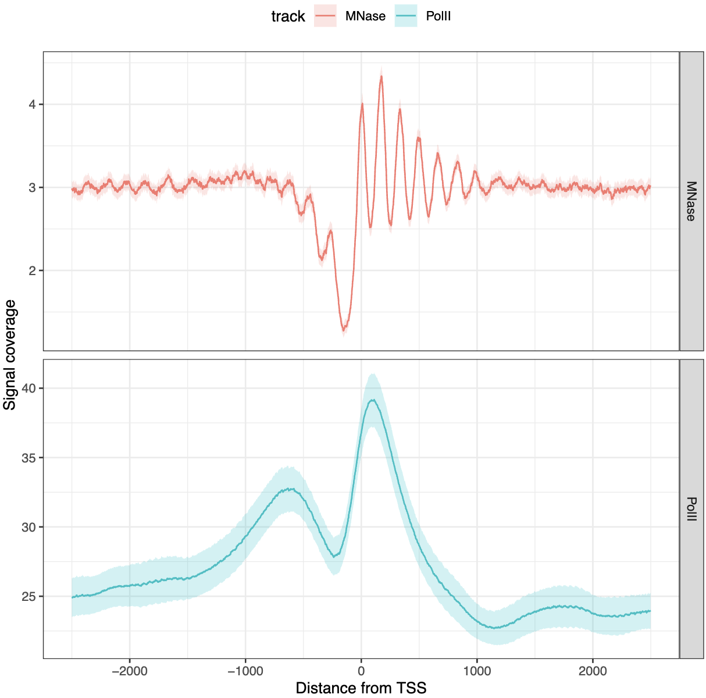
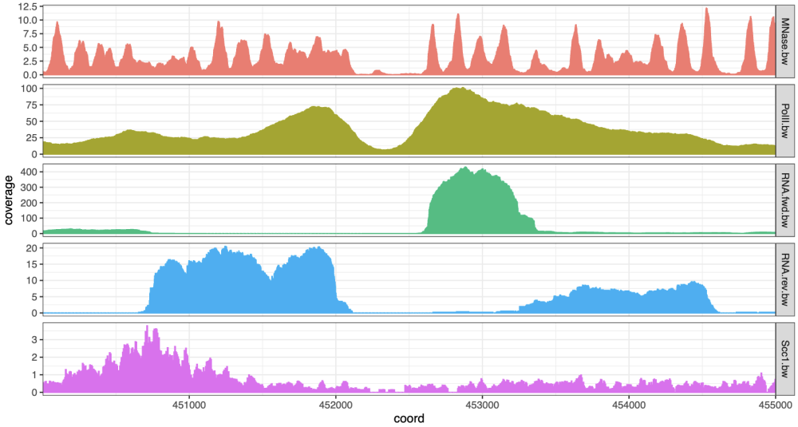

The tidyCoverage R package provides a framework for rapid investigation of collections of genomic tracks over genomic features, relying on the principle of tidy data manipulation. It relies on CoverageExperiment and AggregatedCoverage classes, directly extending the SummarizedExperiment fundamental class,
Installation
In R >= 4.4 and Bioconductor >= 3.19:
if (!require("BiocManager", quietly = TRUE))
install.packages("BiocManager")
BiocManager::install("tidyCoverage")Load libraries and example datasets
library(tidyCoverage)
library(tidySummarizedExperiment)
library(rtracklayer)
library(plyranges)
library(purrr)
library(ggplot2)
# ~~~~~~~~~~~~~~~ Import genomic features into a named list ~~~~~~~~~~~~~~~ #
features <- list(
TSSs = system.file("extdata", "TSSs.bed", package = "tidyCoverage"),
conv_sites = system.file("extdata", "conv_transcription_loci.bed", package = "tidyCoverage")
) |> map(~ import(.x))
# ~~~~~~~~~~~~ Import coverage tracks into a `BigWigFileList` ~~~~~~~~~~~~~ #
tracks <- list(
Scc1 = system.file("extdata", "Scc1.bw", package = "tidyCoverage"),
RNA_fwd = system.file("extdata", "RNA.fwd.bw", package = "tidyCoverage"),
RNA_rev = system.file("extdata", "RNA.rev.bw", package = "tidyCoverage"),
PolII = system.file("extdata", "PolII.bw", package = "tidyCoverage"),
MNase = system.file("extdata", "MNase.bw", package = "tidyCoverage")
) |> BigWigFileList()Extract coverage for each track over each set of features
CE <- CoverageExperiment(tracks, features, width = 5000, ignore.strand = FALSE) Plot tracks coverage aggregated over genomic features
CE |>
filter(track %in% c('MNase', 'PolII')) |>
filter(features == 'TSSs') |>
aggregate() |>
ggplot() +
geom_aggrcoverage(aes(col = track)) +
facet_grid(track ~ ., scales = "free") +
labs(x = 'Distance from TSS', y = 'Signal coverage')
Plot coverage over a single locus
CoverageExperiment(tracks, GRanges("II:450001-455000")) |>
expand() |>
ggplot() +
geom_coverage(aes(fill = track)) +
facet_grid(track~., scales = 'free')
Related projects
A number of CRAN, Bioconductor or GitHub packages already exist to enable genomic track data visualization, for instance:
-
Gviz[Bioconductor] -
soGGi[Bioconductor] -
GenomicPlot[Bioconductor] -
plotgardener[Bioconductor] -
genomation[Bioconductor] -
ggcoverage[GitHub] -
GenomicScores[Bioconductor]
Compared to these existing solutions, tidyCoverage directly extends SummarizedExperiment infrastructure and follows tidy “omics” principles. It does not directly provide plotting functionalities, but instead focuses on data recovery, structure and coercion, using a familiar grammar and standard representation of the data. This ensures seamless integration of genomic track investigation in exisiting Bioconductor and data analysis workflows.